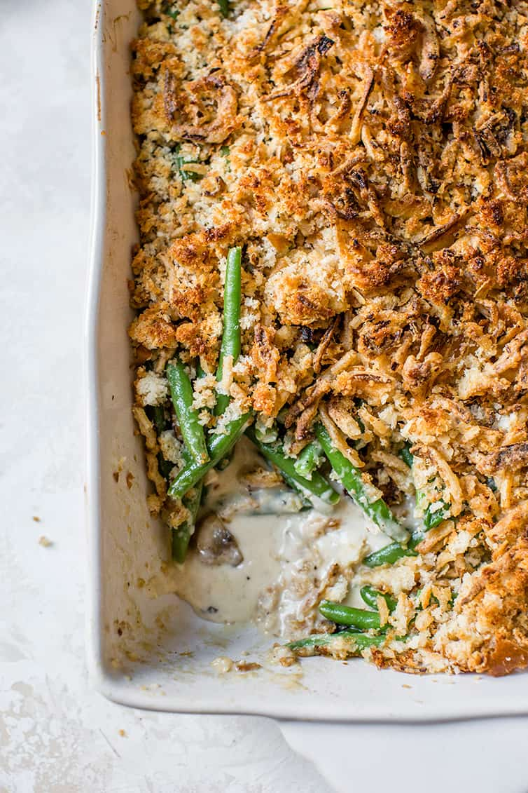

Green Bean Casserole

Green Bean Casserole
Ingredients
- 2 cans of green beans
- 1 can of cream of mushroom soup
- About 2/3 cup of dried onions
Directions
- Preheat oven to 350oF.
- Place green beans and cream of mushroom soup in a pan then stir together
- Cook for about 25 minutes after the oven is preheated
- Take the pan out and add the onions to the top and cook till the onions are golden brown, about 5 minutes